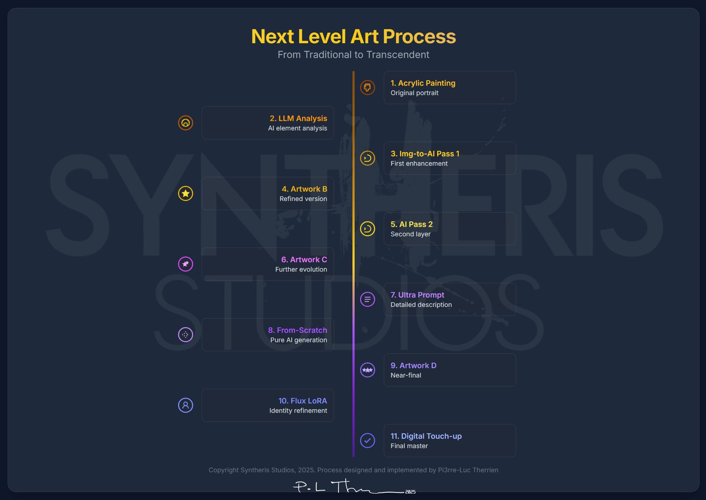
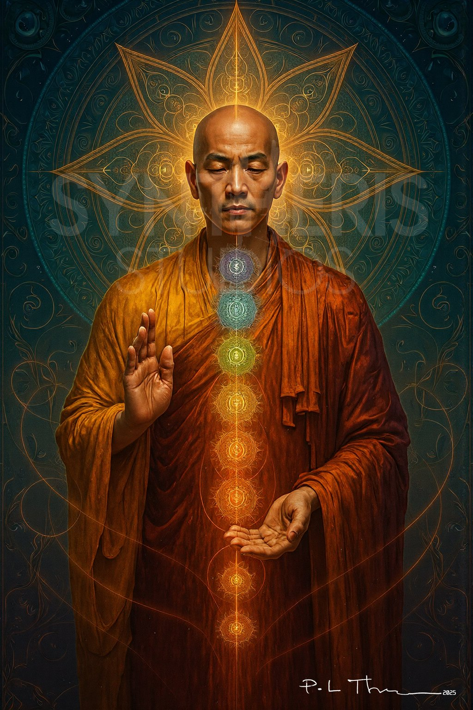

The Next Level Art Process: Redefining AI-Assisted PortraitureThrough 11-Stage Synthesis
Published by Syntheris Studios | July 2025.

In an era where AI-generated art floods the market with one-click creations, a new methodology emerges that fundamentally challenges our understanding of human-machine creative collaboration. The “Next Level Art Process” represents a breakthrough in hybrid artistry, demonstrating that the future of visual art lies not in replacement but in sophisticated synthesis.
The Technical Innovation
Traditional AI art suffers from a fundamental limitation: it lacks the intentionality and soul that comes from human touch. Conversely, traditional art cannot leverage the computational power and pattern recognition capabilities of modern AI systems. The Next Level Art Process solves this dichotomy through an 11-stage iterative refinement system that preserves human artistic vision while exponentially amplifying its impact.
This isn’t merely using AI as a tool—it’s establishing a new creative paradigm where each stage builds upon the previous, creating emergent properties that neither human nor machine could achieve independently.
Breaking Down the Process
Stage 1-3: Foundation and Initial Enhancement
The process begins with a traditional acrylic painting, establishing the emotional core and compositional intent. An LLM analyzes the artistic elements, extracting not just visual data but understanding symbolic meaning and artistic intention. The first AI pass then enhances while respecting the original vision.
Stage 4-6: Iterative Evolution
Each subsequent pass isn’t mere filtering—it’s intelligent evolution. The artwork develops complexity and depth through controlled transformation, with each iteration guided by both algorithmic precision and artistic judgment. This middle phase is where the magic happens: the piece begins transcending its origins.
Stage 7-9: Computational Synthesis
The creation of an ultra-detailed prompt represents a crucial innovation. Rather than simple description, this prompt captures the essence, the trajectory, and the ultimate vision. When used for from-scratch generation, it produces Artwork D—a piece that contains the DNA of all previous iterations while existing as its own entity.
Stage 10-11: Precision Refinement
The Flux LoRA pass addresses the achilles heel of AI portraiture: identity accuracy. By training a custom LoRA on the subject, we achieve photographic precision while maintaining artistic interpretation. Final digital retouching ensures every pixel serves the greater vision.

The “The Transcendent Syntheris” Case Study

The portrait of Sifu Shi Yan Ming demonstrates this process at its apex. Starting from a hand-painted portrait capturing spiritual essence, the work evolved through multiple AI interpretations, each adding layers of meaning and visual complexity. The sacred geometry patterns emerged organically through the process, not imposed but discovered. The final piece achieves what neither traditional nor AI art typically can: authentic spiritual presence with technical perfection.
Market Implications
This methodology creates several competitive advantages:
- Irreproducibility: The complex iterative process cannot be replicated through simple prompting
- Authenticity: Maintains the artist’s hand throughout the digital transformation
- Scalability: Once established, the process can be applied to various subjects while maintaining uniqueness
- Value Proposition: Collectors receive both traditional art heritage and cutting-edge innovation
Technical Requirements
Executing this process demands:
- Professional painting skills
- Deep understanding of AI model capabilities
- Custom LoRA training expertise
- Advanced prompt engineering
- Digital post-processing mastery
This high barrier to entry ensures that practitioners of the Next Level Art Process occupy a unique market position.
Future Applications
The process has immediate applications in:
- Limited edition art collections
- NFT projects requiring genuine uniqueness
- Corporate portraiture seeking distinction
- Spiritual and cultural art preservation
- Museum-quality digital art creation
Conclusion
The Next Level Art Process doesn’t just create art—it establishes a new category of creative expression. As AI tools become increasingly accessible, the differentiator won’t be access to technology but the sophistication of its application. This 11-stage synthesis represents the vanguard of that evolution.
For collectors, this means acquiring pieces that represent both historical significance and future value. For artists, it’s a roadmap to relevance in an AI-dominated landscape. For the culture at large, it’s proof that human creativity, far from being obsolete, is entering its most powerful phase.
The author, Pi3rre-Luc Therrien, is pioneering hybrid art methodologies at Syntheris Studios. The “The Transcendent Syntheris” piece will be presented to the Wu-Tang Clan at their Final Chamber event, representing the first public exhibition of this revolutionary process.